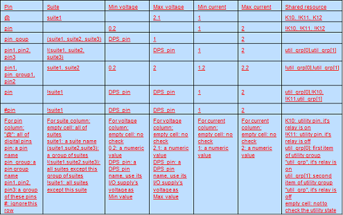

CSV rule file for checking voltage/current risks
To check risky voltage/current programmed to pins with Smart correlation – Release Checker, you must prepare a CSV file that defines the checked pins, test suites, the voltage/current limits and the checking rules.
Syntax
Pin types to be checked for overvoltage/overcurrent risk:
- It only checks digital pins, DPS pins and DC Scale pins.
- For digital pins, vil, vih, iol, ioh are checked.
- For DPS pins, the vout and ilimit sets in the level file are checked.
- For DC Scale DPS pins, the voltage and current forced in the test event are checked and their setups in the level file are checked.
- For DC Scale signal pins, the voltage and current forced in the test event are checked.
Checking rules for overvoltage/overcurrent risk
You must:
- Specify pins and test suites to be checked.
- Specify voltage/current limits (min and/or max values) used for reporting risks.
You can use the values of DPS pins as the min/max values.
- Follow the order of single pin, all pins, pin groups, and then multiple pins when specifying pins.
You can specify the shared resource as a "Rule Gate".
- If "Rule_Gate == True", the checking is executed.
- If "Rule_Gate == False", the checking is not executed.
Example
The following screenshot illustrates an example of a configuration CSV file.

Functional changes
- Introduced in SmarTest 7.3.2